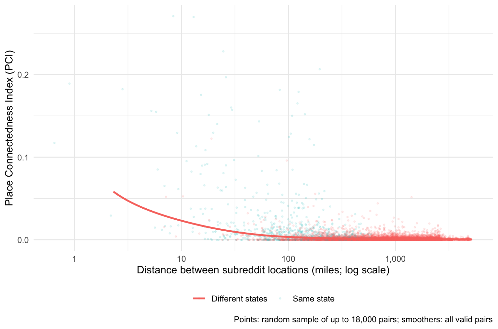
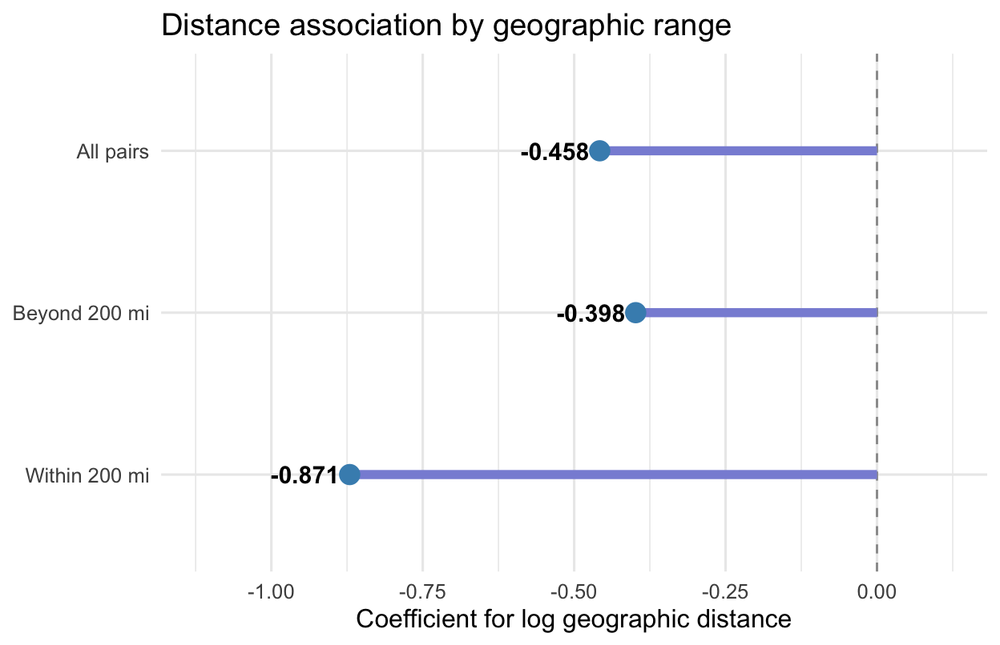

Distance vs. Connectedness: Location-based Reddit Forums Analyzed
Project Presentation
Christy Hsu
1. Can Online Communities Reveal Relationships Between Places?
Research question: Can shared participation in location-based Reddit communities reveal how places in the U.S. are connected?
Local Reddit CommunitiesOnline forums associated with places
→
Shared ContributorsAuthors active in more than one forum
→
Place ConnectednessQuantified overlap between communities
→
Geographic PatternsDistance, state boundaries, regions
Three questions
- Does connectedness decline with geographic distance?
- Does belonging to the same state matter?
- Can regions emerge from connectedness without supplying geographic coordinates to the clustering algorithm?
Research inspiration
Bailey et al. (2018) measured social connectedness using Facebook friendship links and examined geographic distance, boundaries, and clustering (Bailey et al. 2018).
My adaptation: Reddit co-participation, not friendship, as a measure of overlapping engagement with places.
2. From Raw Reddit Records to an Analytical Dataset
Scale and processing
- 64.7 million submissions and comments
- 4,081,891 distinct contributing authors
- 619 initially selected U.S. location-based subreddits
- June 2023–July 2024
- PySpark + AWS for large-scale processing
The original QMD also reports 612 in an earlier summary. Verify the intermediate filtering counts before presenting them as a finalized funnel.
Data preparation
- Select and collect posts/comments from location-based subreddits.
- Identify unique authors and the communities where they contributed.
- Inspect high-activity accounts and ambiguous subreddit identities.
- Integrate latitude/longitude from Wikipedia’s U.S. city list and Wikidata SPARQL, with manual checks.
- Construct author overlap, community sizes, and pairwise geographic distances.
Final pairwise regression table: 611 communities → 186,355 possible unordered pairs, including pairs with zero shared authors.
Processing skill: The analytical dataset was constructed from raw activity records, community identifiers, and separately sourced geographic metadata—not provided as a ready-made table.
3. Who Connects Local Reddit Communities?
Key observations
- 69.7% contributed to only one selected subreddit.
- 1,238,714 contributed to two or more.
- Among multi-subreddit authors: median = 2, Q3 = 3, maximum = 374.
Operationalization
Posting/commenting indicates observable engagement with a local forum, possibly motivated by residence, hometown ties, travel, curiosity, nostalgia, or disagreement.
It does not establish residence, friendship, or like-mindedness.
Why it matters: Multi-community contributors generate cross-subreddit overlaps. Extremely broad participation also motivates outlier and automated-account checks.
4. An Unexpected Cluster Revealed a Data Quality Problem
The r/jersey investigation
1. Notice: In the first clustering of all subreddits, at k = 2, r/jersey formed a cluster by itself.
2. Investigate: I examined the community identity rather than assuming the model was wrong.
3. Verify: r/jersey concerned Jersey, the island in the English Channel, not New Jersey or Jersey City.
4. Correct: I excluded the geographically mismatched subreddit from the U.S. analytical sample.
Why this example matters
Unsupervised EDA → anomaly → manual verification → dataset correction
A name-based geographic match can be wrong. Clustering flagged the anomaly; inspecting the community confirmed the problem.
If available, replace this text area with your original preliminary k=2 clustering screenshot. Do not use the later state-only map as evidence of this earlier discovery.
Data validation is iterative: An unexpected analytical result can reveal a data-quality issue that was not obvious during initial collection.
5. Does Connectedness Decline with Distance?

What to look for
- Do nearby communities tend to have greater shared participation?
- Is the relationship different for same-state pairs?
- Are there outliers or heavy concentration near PCI = 0?
PCI: \(N_{ij}/\sqrt{|A_i||A_j|}\), where \(N_{ij}\) is the number of authors shared by communities \(i\) and \(j\).
This is a descriptive PCI plot. The regression on the next slide instead models \(\log(N_{ij}+0.5)\) with subreddit fixed effects.
6. Regression: Distance and State Boundaries
\[ \log(N_{ij}+0.5)=\beta_1\log(D_{ij})+\beta_2\mathrm{SameState}_{ij}+\alpha_i+\alpha_j+\epsilon_{ij} \]

Fixed-effects results
| Pairs | Distance | Same state | Adj. \(R^2\) |
|---|---|---|---|
| All | −0.458 | +1.087 | .791 |
| ≤200 mi | −0.871 | +1.187 | .888 |
| >200 mi | −0.398 | +0.730 | .786 |
All displayed coefficients: p < .001. Both subreddit fixed effects included in every model.
Interpretation: Shared participation decreases with distance; the relationship is steeper locally. Same-state pairs show higher overlap after accounting for distance and subreddit effects.
Observational associations, not causal estimates. The outcome is logged shared-author count, with 0.5 added before logging.
7. Can Connectedness Reconstruct U.S. Regions?
State-level subset (50 states + Washington, D.C.): PCI-weighted network → Node2Vec embeddings → complete-linkage hierarchical clustering.

How to read this map
- At k = 2, a broad East–West division appears.
- Geographic coordinates were not supplied to clustering.
- Increasing \(k\) reveals finer subdivisions of the network.
Clusters summarize similarity in online connectedness profiles, not predefined Census regions or proof of direct social ties.
A striking result: Broad geographic structure appears from online co-participation relationships alone.
8. What I Learned — and What Transfers
Main findings
Geography matters: Shared Reddit participation is associated with geographic proximity and state boundaries.
Networks reveal structure: Connectedness-based clustering recovers recognizable broad geographic patterns.
Exploration improves quality: The r/jersey anomaly illustrates how EDA can uncover mistakes in the data itself.
Skills demonstrated
- Data processing: PySpark, AWS, large-scale record transformation
- Data integration: Wikidata/Wikipedia coordinates and manual verification
- Data quality: anomaly investigation, filtering, validation
- Visualization: EDA, scatterplots, model summaries, maps
- Analysis: regression, network embeddings, hierarchical clustering
Limitations: Reddit contributors need not be residents; co-participation is not friendship; communities differ in size and geographic scale; results are descriptive/associational.
Project lesson: Transforming raw data into useful findings requires measurement choices, data validation, appropriate analysis, and clear communication.
References
Bailey, Michael, Rachel Cao, Theresa Kuchler, Johannes Stroebel, and Arlene Wong. 2018. “Social Connectedness: Measurement, Determinants, and Effects.” Journal of Economic Perspectives 32 (3): 259–80. https://doi.org/10.1257/jep.32.3.259.